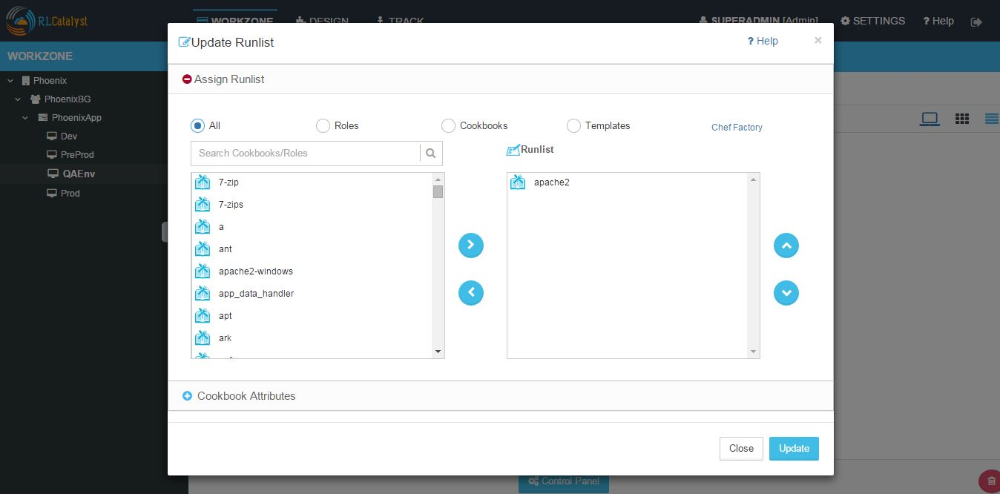
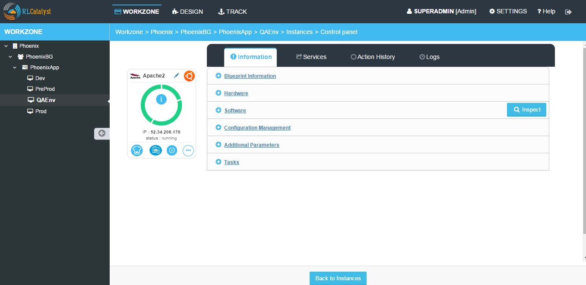

Workzone¶
RL Catalyst Workzone is an option all the settings take action. Workzone has below options.
- Infrastructure:
- Instances : It displays the numbers of instances that currently launched and running.
- Blueprints : This options allows you to launch instances.
- Cloud Formation : It displays the list of stacks launched from cloud formation blueprints.
- Containers : Container details launched from docker blueprints.
Orchestration: This options allows you to execute one or more tasks/actions on multiple nodes.
Applications: Here user can deploy new applications and deployed applications will be shown in card or table view will all details.
- How to Launch Instances?
Instances are launched from Blueprints. Follow below steps to launch Instances from blueprints.
- Go to Workzone → Click on Infrastructure drop down → Choose Blueprints.
- Select the Blueprint and click on Launch button. Once the ‘Launch’ button is clicked, the instance will be launched in 5-8 minutes.
- Go to Instances tab to view the launched instance.
- Instance Actions:
On the launched instance user can perform below actions.
- Chef Client Run
- SSH
- Stop / Start
- MoreInfo
- Chef Client Run option allows you to update the Chef Client Runlist. You can add new software to the Runlist and click on Update.
- SSH, this option allows you to open the command prompt Terminal. You can execute your commands directly using this option.
- Stop, This option allows you to start and stop an Instance.
- More Info, This option displays the information about the Instance. You can view the logs of the Instance.
- How to perform Chef Client Run action on launched instance?
- Any extra action on the running instance can be performed via the Chef client Run icon, which is displayed at the bottom left corner. Installing new software, upgrading a software etc can be performed using this icon.
Follow below steps to run chef client run.

- Click on Chef client run icon.
- Select any cookbook cookbook and move to Runlist by clicking > icon.
- Click on Update button.
- Click OK on confirmation popup to update runlist.

- Instance Logs window will be displayed to see the logs.

- Click on Close button to close the Instance logs window.
- How to Perform SSH action on the Instance?
- Click on the SSH icon present on the instance.
- Enter the Username of the Instance.
- Select the authentication type by selecting password / pem file.
- Enter the Password or Browse the Pem file.
- Click on Submit button.
- How to Stop running instance from Catalyst?
- Click on the Stop icon present on the instance.
- Click OK on confirmation popup.

- Instance status is showing as stopped and red icon will be shown.
Note: User can perform stop / start action only for the launched node from catalyst.
Note: For the imported node from IP address Stop button will be grayed out will be shown later.
Note: For the Stopped Instance, Chef client SSH buttons will be disabled.

- How to Start an Instance from Catalyst?
- Click on the Start icon of the stopped instance.
- Instance will be started and turn to Green color. Chef Client , SSH button will be enabled.

- How to Import an Instance using IP?
In the Instances page, you can import Instances using the Import By IP option, follow these steps to import.
- Click on Import by IP icon.
- In the Import Instance By IP window.
- Provide the IP address which needs to be Imported.
- Choose the operating system from Choose Operating System drop down list.
- Provide the user name in the Username box.
- Choose authentication type from the Choose Authentication Type drop down list. RL Catalyst provide two types of authentication, you can choose Password or by uploading PEM file.
- Type Password or upload PEM file.
- Provide the application name in the Name box and the host URL in the URL box.
- You can also Add new application by clicking on the Add Application URL option.
- Click Import to start importing the Instance.

- Node will be imported and displayed in the instances tab. For the imported node Stop button will be disabled.

- How to launch Cloud Formation Blueprints?
Follow below steps to launch Cloud formation blueprints.
- Go to Workzone → Click on Infrastructure dropdown → Select Blueprints option → Click on ‘Cloud Formation’ template type.
- Select the cloud formation blueprint and click on Launch button.
- Enter the Unique Stack Name in the popup window.
- Click on Submit button.
- Confirmation pop will be displayed with Stack ID.
- Close the popup.
- Go to Infrastructure - > Cloud Formation , the CFT stack will be listed.

- Go to Instances tab to see the launched Instance.
- How to launch Docker blueprints?
Follow below steps to launch docker blueprints.
- Go to Workzone → Click on Infrastructure dropdown → Select Blueprints option → Click on ‘Docker’ template type.
- Select the docker template which is listed and click on Launch button.
- Click OK on the Confirmation popup.
- Click Next button in the Launch docker blueprint window.
- Select the node on which you are going to launch docker blueprint and click on Start button.
- Logs window will be displayed and wait until the installation successful.
- Go to Infrastructure - > Containers tab, the container details will be listed.

- Control Panel
The Control Panel option displays the detailed information on the selected Instance . It displays information such as Blueprint Information , Hardware information, Software Information, Configuration Management, Additional Parameters, Services, Actions and Logs.
- How to Inspect Software on the Instance?
Inspect functionality allows user to know the installed software on the Instance.
- Go to Instance Control panel.
- Click on Inspect Software button.
- Popup is displayed to know the installed software on the instance.
- How to Convert to Workstation in Instance?
- Go to Instance Control panel → Services tab.
- Click on ‘Convert To Workstation’ button.
- Click on ‘OK’ button.
- Confirmation pop up is displayed saying ‘Your workstation has been setup successfully. The .chef folder is available in Home’.

- Click on OK button to close the popup.
- How to View the Action History on Instance?
Action history feature allows user to view the history of the actions performed on the Instances with complete details.
- Go to Instance Control panel.
- Click on Action History tab.

- How to View Instances in Table View?
RL Catalyst on the Instances page provides you two kinds of views.
- Grid View
- Table View
You can click on the respective button to view the instances.

- Orchestration
- Orchestration option allows you to execute one or more tasks/actions on multiple nodes.
- To add a Chef Server New Task
- To add a new task click on the New button.
- Select the task type from the Select Task Type drop down list (Chef).
- Enter a task name in the Task Name box.
- Select the nodes from the Select Nodes list for which you want to assign task.
- Click on Edit Runlist icon and add cookbooks to the runlist.
- Click on Update runlist button.
- You can also select the Cookbook Attributes.

- Click Save button to save the task.
- The task is added to the Orchestration list.

- To add a Jenkins New Task
- To add a new task click on the New button.
- Select the task type from the Select Task Type drop down list (Jenkins).
- Enter a task name in the Task Name box.
- Select the server from the Select Jenkins Server drop down list.
- Select the job from the Select Job drop down list.
- Select the Auto synch button to ‘Yes’ [ This will shows the task execution history].
- Add Job links for the Jenkins task.
- Click Save button to save the task.
- The task is added to the Orchestration list.

- How to Edit or Remove a Task?
You can edit or remove a task. Follow the steps below.
- Click on Edit button to edit a task from the Orchestration list.
- Click on Delete button to remove a task from the Orchestration list.
- How to Execute a Task (Chef and Jenkins)?
You can execute a task (Chef and Jenkins) by clicking Execute button in the list of tasks page.
Once you execute the task, Execute logs window will pop-up shows the status of the execution.
- How to view Task History?
You can view the task history by clicking the History button in the list of tasks page. Once you click on the history button, Task History window will pop-up and shows the history of the task.
The following information is shown in the history of task:
- Job number
- Job output links including logs info
- Status
- Start time
- Endtime
- Logs